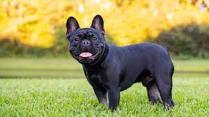

Overview
The one-of-a-kind French Bulldog, with his large bat ears and even disposition, is one of the world's most popular small-dog breeds, especially among city dwellers. The Frenchie is playful, alert, adaptable, and completely irresistible. The French Bulldog resembles a Bulldog in miniature, except for the large, erect 'bat ears' that are the breed's trademark feature. The head is large and square, with heavy wrinkles rolled above the extremely short nose. The body beneath the smooth, brilliant coat is compact and muscular. The bright, affectionate Frenchie is a charmer. Dogs of few words, Frenchies don't bark much, but their alertness makes them excellent watchdogs. They happily adapt to life with singles, couples, or families, and do not require a lot of outdoor exercise. They get on well with other animals and enjoy making new friends of the human variety. It is no wonder that city folk from Paris to Peoria swear by this vastly amusing and companionable breed.
Characteristics
- French Bulldog's grumpy expression belies a joyful disposition
- playful, affectionate, and fairly energetic
- enjoy relaxing as much as playing and are ideal for the elderly.
- gentle, friendly, affectionate, and loyal
Care
Brush her coat as needed, at least weekly. French Bulldogs often have serious problems with their teeth, so you'll need to brush them at least three times a week! Check her facial wrinkles and eyes often. Her droopy skin and eyes can collect debris. Due to the expenses associated with owning this breed and their increased potential for health issues, French Bulldogs are considered a high-maintenance dog breed. They typically need a dedicated and vigilant owner to attend to their special needs.